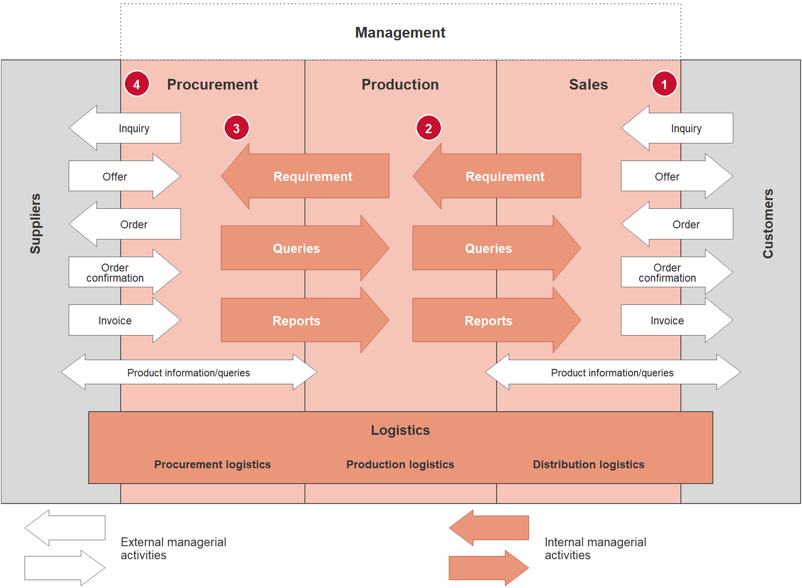

2 Value Creation, Strategic Manufacturing and Strategic Fit
Learning objectives
- You can structure the value-creation process of a supply chain into the stages of procurement, production, distribution and sales.
- You can explain the strategic manufacturing decision (make or buy) and the position of the decoupling point (make-to-stock vs. make-to-order).
- You can contrast implied demand uncertainty with the responsiveness of a supply chain.
- You can assess the strategic fit of a supply chain configuration on the basis of competitive strategy and implied uncertainty.
- You can write your own functions in R, use control flow with
if/elseand analyse tables withmutate(),filter()andselect().
2.1 Introduction
In the first chapter, a supply chain was described as a network of actors who exchange material, information and financial flows in order to bring a product from the raw material to the end customer. However, this definition does not yet answer the question of why a supply chain exists at all and how it should be designed so that it fits a company’s business model. This is precisely where this chapter comes in: first, the value-creation process is introduced as a chain of successive activities that generate customer benefit from inputs. Next, the strategic manufacturing decision is considered, i.e. the question of which value-creation stages a company performs itself (make) and which it sources from third parties (buy), and at which point in the chain production meets specific customer orders. The chapter concludes with its central concept: strategic fit according to Chopra and Meindl (2025) — the requirement that a company’s competitive strategy and its supply chain strategy must be consistently aligned with each other.
These three building blocks are closely interrelated: only when the value chain is known can one decide which stages are performed internally and which externally. And only when one knows how a supply chain is structured can one judge whether it matches the uncertainty of the market being served.
2.2 Value creation as a process
A supply chain can be understood as a sequence of value-adding activities that transform intermediate products and services step by step into a product for which a customer is willing to pay. This chain can be roughly divided into four successive process phases:
Definition: Value-creation process
Procurement is the process of purchasing and providing raw materials, components and services from external partners that are required for the production of goods and services.
Production is a purposeful process of combining goods and services into higher-value products.
Distribution comprises the physical movement of goods from the manufacturer to the end customer, in particular warehousing, transport and logistics of finished products.
Sales is the process of selling the end products to consumers or trading partners.
These four phases are to be understood analytically, not organisationally: in practice, they overlap, sometimes run in parallel and are often carried out by different companies along the chain. An automotive supplier, for example, simultaneously carries out procurement (raw steel, electronic components), production (manufacture of assemblies) and distribution (“just-in-sequence” delivery to the OEM) — its sales are at the same time the procurement of the next link in the chain. Value creation is therefore not a feature of a single company but a property of the entire chain: each stage receives inputs, refines them and passes them on to the next stage, with the value from the end customer’s perspective increasing with each step (see Chopra and Meindl (2025), Chapter 1.5).
This chain perspective is the basis for the strategic manufacturing decision, which is the subject of the next section: for each value-creation stage, a company must decide whether to operate it itself or to outsource it.
2.3 Strategic manufacturing: make or buy
The strategic manufacturing decision — known in English as the make-or-buy decision — concerns the question of which value-creation stages a company performs itself and which it outsources to external partners (external sourcing). This decision is strategic because it cannot be reversed in the short term: in-house production capacities require investment in facilities, personnel and know-how, while external sourcing entails dependence on suppliers and a loss of direct control over quality and delivery capability.
Classic criteria for the make-or-buy decision include:
- Core competence: activities that underpin a competitive advantage (e.g. proprietary manufacturing technology) tend to be kept in-house (make); standardised commodity processes are more suitable for external sourcing (buy).
- Costs: economies of scale of specialised external providers can make outsourcing cheaper than one’s own lower-volume production.
- Tied-up capital and flexibility: in-house facilities tie up capital and increase fixed costs; external sourcing shifts costs into variable components and increases flexibility in the face of demand fluctuations.
- Risk and control: in-house production secures control over quality, deadlines and intellectual property, but increases entrepreneurial risk (e.g. capacity utilisation risk).
Closely linked to the make-or-buy question is the question of where within the value chain production meets the specific customer order — the so-called decoupling point (also customer order decoupling point, CODP). It marks the point from which a product becomes specific to a customer order, while upstream stages produce on the basis of forecasts (anonymously, for stock).
2.3.1 Thinking in cycles
A helpful framework for analysing the value chain is to view it in terms of four process cycles, each linking two adjacent stages of the chain (cf. Kummer et al. (2018), p. 45):
- Customer order cycle: processing external customer demands (between customer and retailer).
- Replenishment cycle: converting customer demands into internal demands for finished products (between retailer and manufacturer).
- Manufacturing cycle: converting internal demands into production requirements for intermediate products and raw materials (within production).
- Procurement cycle: designing ordering and supply processes for raw materials and services to be sourced externally (between manufacturer and supplier).
Within the company, these cycles are realised by managerial activities. Figure 2.1 shows how a customer inquiry (1) propagates upstream: sales passes a requirement on to production (2), production passes it on to procurement (3), and procurement finally sends an inquiry to the suppliers (4). External managerial activities (inquiry, offer, order, order confirmation, invoice) link the company with its suppliers and customers, while internal managerial activities (requirements, queries, reports) link the functional areas with each other.
Each of these cycles can be either customer-order-driven (“pull”, triggered by a specific demand) or forecast-driven (“push”, triggered by a prediction). The boundary between the push and pull sections of the chain is precisely the decoupling point. The further upstream (towards raw materials) this point lies, the larger the share of the chain that only becomes active after an order has been received — and the lower the risk of producing for stock for an anonymous market. However, this usually also increases the delivery time the customer has to accept.
2.3.2 Make-to-stock vs. make-to-order
Two limiting cases of decoupling are particularly well known in practice:
With make-to-stock (MTS), the decoupling point lies at the very end of the chain: finished products are produced anonymously on the basis of sales forecasts and held in a finished-goods warehouse. The customer buys from stock and receives the goods immediately or after a very short delivery time. Typical examples are food retail or drugstores: here, product variety is relatively standardised, demand is fairly predictable, and customers expect immediate availability.
With make-to-order (MTO), by contrast, the decoupling point lies at the very beginning of the chain: production only begins once a specific customer order has been received. Typical examples are buildings, aircraft or paintings — highly individualised, rare, high-margin goods for which make-to-stock would be either impossible (because each product is unique) or economically unreasonable (too much tied-up capital for an aircraft “in stock”). Here, the customer accepts a considerably longer delivery time as the price of individualisation (cf. Chopra and Meindl (2025)).
Between these poles lie hybrid strategies such as assemble-to-order (final assembly only after receipt of the order, e.g. for individually configured PCs or vehicles) — here, components are pre-produced on the basis of forecasts, but the final configuration is specific to the customer order. The choice of decoupling point is thus itself a strategic manufacturing decision, closely linked to the question of responsiveness and efficiency discussed in the following section.
R aside: Defining your own functions
In Chapter 1 you worked with vectors, data.frame/tibble and basic functions such as mean() or sum(). Often, you do not want to write out a calculation that is needed several times over and over again, but rather encapsulate it in your own function. A function is defined with the keyword function(); its body is placed in curly brackets { }, and the last evaluated expression (or an explicit return() call) is the return value.
As an example: a simple rule of thumb for the make-or-buy decision is to produce an activity in-house (make) if one’s own production costs per unit are lower than an external supplier’s offer price plus procurement costs. We represent this as a function:
Code
# Function: compares internal production costs with the external purchase price
make_or_buy <- function(kosten_intern, preis_extern, beschaffungskosten = 0) {
# Total cost of external sourcing: purchase price plus incidental procurement costs
kosten_extern_gesamt <- preis_extern + beschaffungskosten
# Return value: character scalar with the recommendation
kosten_extern_gesamt # the last expression is NOT automatically returned as a recommendation,
# since we still want to make a decision - see below
}The draft above only calculates the total external price but does not yet make a decision. For that, we need control flow with if/else, which is introduced in the next aside.
R aside: Control flow with if/else
With if (condition) { ... } else { ... }, the program flow can be branched: if the condition is TRUE, the first block is executed, otherwise the else block. We extend the function make_or_buy() from the previous aside with genuine decision logic:
Code
# Extended function with decision logic via if/else
make_or_buy <- function(kosten_intern, preis_extern, beschaffungskosten = 0) {
# Calculate total cost of external sourcing
kosten_extern_gesamt <- preis_extern + beschaffungskosten
# Decision rule: make if internal is cheaper than external
if (kosten_intern < kosten_extern_gesamt) {
entscheidung <- "Make (in-house production)"
} else if (kosten_intern > kosten_extern_gesamt) {
entscheidung <- "Buy (external sourcing)"
} else {
entscheidung <- "Indifferent - check further criteria"
}
# Return as a named list: figures and recommendation together
list(
kosten_intern = kosten_intern,
kosten_extern_gesamt = kosten_extern_gesamt,
empfehlung = entscheidung
)
}
# Example call: a component costs EUR 18.50 in-house,
# a supplier offers it for EUR 15 plus EUR 2 procurement costs
make_or_buy(kosten_intern = 18.50, preis_extern = 15, beschaffungskosten = 2)$kosten_intern
[1] 18.5
$kosten_extern_gesamt
[1] 17
$empfehlung
[1] "Buy (external sourcing)"Important: such a cost rule of thumb falls short when core competence, capacity risk or strategic dependence are the main concern — it is an initial quantitative guide, not a complete decision model.
2.4 Strategic objectives: customer satisfaction under uncertainty
Every supply chain is ultimately measured by how well it meets customer expectations — and customer expectations are multifaceted. They can be described along five dimensions:
- Cost: the price the customer is willing to pay for the service as a whole (including delivery and incidental costs),
- Quality: the conformity of the product with the promised properties — for food, for example, freshness and hygiene,
- Time: the delivery time between order and availability or, for merchandise, immediate availability on the shelf,
- Reliability: the dependability with which commitments on quantity, date and quality are met,
- Accessibility: how easily the customer can obtain the product (number and location of points of sale, opening hours, sales channels).
The dimensions of time and reliability are highlighted on the slides as service dimensions: they are delivered not by the product itself but by the supply chain, and are directly related to customer and supply chain uncertainty. A product may be of excellent quality and inexpensive — if it is not available on time and reliably, the supply chain still fails to meet customer expectations. This uncertainty manifests itself, among other things, in:
- the quantity demanded per customer order,
- the delivery time accepted by the customer,
- the expected product variety,
- the expected service level,
- the price level or willingness to pay, and
- the degree of product innovation.
To structure this uncertainty, two closely related but not identical terms are distinguished:
Definition: Demand uncertainty and implied demand uncertainty
Demand uncertainty is the uncertainty about the actual demand for a product in the market as a whole.
Implied demand uncertainty is the uncertainty of the demand segment that is to be served by a specific supply chain, based on the demand attributes addressed by that supply chain (e.g. delivery time, product variety, service level).
The difference is important: one and the same product can be sold through different supply chains, each serving different demand attributes — and thus exposed to different implied uncertainties, even though the underlying market demand is identical. An example: a manufacturer can sell the same product through an online shop with guaranteed 24-hour delivery and through bricks-and-mortar retail with a pre-order time of several weeks. The online channel has a considerably higher implied uncertainty because it must respond at short notice to individual orders, whereas the bricks-and-mortar channel can better absorb demand fluctuations thanks to the long lead time.
The following table systematises how different customer needs increase the implied uncertainty of a supply chain:
| Customer need changes … | … which increases implied uncertainty because … |
|---|---|
| (maximum) quantity demanded increases | the range of demand widens and a greater variance in demand quantities arises |
| delivery time decreases | less time remains to react to demand fluctuations |
| number of products offered increases | demand for the individual products is harder to forecast |
| required service level increases | demand peaks must be reliably absorbed |
| degree of innovation increases | demand for new products is usually unknown or difficult to forecast |
| number of sales channels increases | demand in the individual channels is harder to forecast |
This implied uncertainty is not evenly distributed across the supply chain: depending on where inventory and capacity buffers are positioned, different actors bear a different share of the total implied uncertainty of the supply chain. In a chain in which the retailer holds large safety stocks, the manufacturer is largely shielded from short-term demand fluctuations; if this buffering function shifts towards the manufacturer, the manufacturer bears a larger share of the uncertainty (cf. Chopra and Meindl (2025), p. 57).
The slides illustrate this with two chains that have to cope with the same total implied uncertainty but divide it differently. In Supply Chain I, the retailer absorbs the largest share: it keeps a broad assortment in stock and buffers demand fluctuations with inventory, so that the manufacturer and supplier can plan with comparatively stable demand and concentrate on efficiency. In Supply Chain II, the manufacturer absorbs the largest share — for example because it produces to individual customer specifications (make-to-order) and the retailer acts only as a point of sale and delivery. This leads to an important refinement of the strategic fit idea: not every stage of a chain needs to be equally responsive. What matters is that the stage bearing a large share of the uncertainty is designed to be responsive, while stages shielded by upstream or downstream buffers can operate efficiently. Incidentally, a fresh-food producer such as SushiFresh GmbH, which will accompany us from Chapter 3 onwards, can hardly pass this uncertainty on to retailers: sushi boxes cannot be stored, so the quantity decision has to be made anew by the manufacturer every morning (cf. the newsvendor model in Chapter 8).
R aside: Basic dplyr verbs — mutate(), filter(), select()
From Chapter 1 you already know tibble() for creating data tables. The dplyr package (part of the tidyverse) provides a small number of easily combinable “verbs” for transforming such tables:
-
mutate()creates new columns (or modifies existing ones), -
filter()keeps only rows that satisfy a condition, -
select()selects a subset of the columns.
We build a small example table with value-creation stages, their costs per unit and the selling price achieved, and use it to calculate margin and relative margin:
Code
# Small example table: four value-creation stages of a supply chain
wertschoepfung <- tibble(
stufe = c("Procurement", "Production", "Distribution", "Sales"),
kosten_je_einheit = c(12.0, 8.5, 3.0, 1.5), # EUR per unit, cumulatively attributable
preis_je_einheit = c(15.0, 24.0, 27.5, 32.0) # cumulative selling/transfer price
)
wertschoepfung_erweitert <- wertschoepfung |>
# new column: absolute margin per stage
mutate(marge_absolut = preis_je_einheit - kosten_je_einheit) |>
# new column: relative margin (margin relative to price)
mutate(marge_relativ = marge_absolut / preis_je_einheit)
wertschoepfung_erweitert# A tibble: 4 × 5
stufe kosten_je_einheit preis_je_einheit marge_absolut marge_relativ
<chr> <dbl> <dbl> <dbl> <dbl>
1 Procurement 12 15 3 0.2
2 Production 8.5 24 15.5 0.646
3 Distribution 3 27.5 24.5 0.891
4 Sales 1.5 32 30.5 0.953filter() reduces the table to rows that satisfy a logical condition — for example, all stages with a relative margin above 30%:
Code
# Keep only stages with relative margin > 0.30
wertschoepfung_erweitert |>
filter(marge_relativ > 0.30)# A tibble: 3 × 5
stufe kosten_je_einheit preis_je_einheit marge_absolut marge_relativ
<chr> <dbl> <dbl> <dbl> <dbl>
1 Production 8.5 24 15.5 0.646
2 Distribution 3 27.5 24.5 0.891
3 Sales 1.5 32 30.5 0.953select(), in turn, selects specific columns, for example when only the stage name and relative margin are of interest:
Code
# Keep only the columns 'stufe' and 'marge_relativ'
wertschoepfung_erweitert |>
select(stufe, marge_relativ)# A tibble: 4 × 2
stufe marge_relativ
<chr> <dbl>
1 Procurement 0.2
2 Production 0.646
3 Distribution 0.891
4 Sales 0.953The pipe operator |> (already familiar from Chapter 1) chains these steps together legibly from left to right: “Take the table, then create new columns, then filter, then select columns.” These three verbs — together with arrange() (sorting) and summarise() (aggregating), which follow in later chapters — form the backbone of data analysis with dplyr.
2.5 Responsiveness and efficiency
Having introduced implied uncertainty as a property of the demand side, the question arises as to how a supply chain should respond to it. This is where two opposing basic strategic orientations come into play:
Definition: Responsiveness and efficiency
The responsiveness of a supply chain is its ability to deal with demand uncertainty — for example through rapid response to demand fluctuations, short delivery times or high product variety.
The efficiency of a supply chain is the inverse of its total costs, i.e. all costs incurred in bringing a product from the extraction of raw materials to the end customer.
Responsiveness can be achieved, among other things, through high inventory levels, short response and delivery times, high product variety, short development cycles for new products, high service levels and the reduction of supply uncertainties. However, each of these measures entails additional costs: higher inventory ties up capital, short delivery times require capacity reserves, and high product variety makes economies of scale in production harder to achieve. Responsiveness and efficiency are therefore in a fundamental trade-off (goal conflict): each additional unit of responsiveness can only be obtained at higher cost, and conversely, cost efficiency can usually only be increased at the expense of responsiveness.
Formally, this relationship can be represented as a cost–responsiveness efficient frontier: for a given process design, there is a set of combinations of responsiveness and cost that can best be achieved with the available resources. Points on this frontier are efficient in the sense that no combination of responsiveness and cost can be achieved that would be both more responsive and cheaper. Only through investment in better processes, technologies or information systems can the entire frontier be shifted outwards — but no single point on it can be improved without a compromise.
This trade-off is operationalised by five strategic supply chain drivers, through which a company can actively shape the position of its supply chain on the continuum between efficiency and responsiveness:
| Driver | Typical levers |
|---|---|
| Production | production technology, product portfolio, vertical integration |
| Logistics | transport modes, warehouse capacities, safety stocks |
| Structure | supplier selection, site capacities, stages and links of the chain |
| Price | pricing, demand management, discounting |
| Information | information sharing, system integration, collaborative forecasting and planning |
Each of these drivers can be configured on a scale between “cost-optimised” and “response-optimised”. A company that, for example, aims for high machine utilisation (production driver towards efficiency), holds minimal safety stocks (logistics driver towards efficiency) and selects suppliers primarily on the basis of cost (structure towards efficiency) positions its entire supply chain clearly on the efficiency side of the spectrum — and vice versa.
2.6 Strategic fit
All the building blocks are now in place to introduce the central concept of this chapter: strategic fit.
Definition: Strategic fit
Strategic fit refers to the consistent alignment between a company’s competitive strategy (what the customer can expect) and its supply chain strategy (how the supply chain is configured), such that the implied uncertainty the supply chain has to cope with matches the degree of responsiveness for which the supply chain is designed (Chopra and Meindl 2025, 56).
Graphically, strategic fit can be represented as a diagonal in a coordinate system whose horizontal axis shows demand uncertainty (from low to high) and whose vertical axis shows the supply chain optimisation objective (from efficiency to responsiveness). Products with low demand uncertainty — such as established basic commodities like salt or staple foods — are best served by a supply chain designed primarily for efficiency: demand is easy to forecast, so cost savings through high utilisation, low inventory and long production runs are hardly bought at the price of shortages or overstocks. Products with high demand uncertainty — such as a new product in a new market — by contrast require a supply chain designed primarily for responsiveness: since demand can hardly be forecast reliably, the chain must be able to respond flexibly to actual orders, even if this entails higher costs.
Strategic fit is achieved when a supply chain configuration lies close to this diagonal. Deviations from the diagonal are strategically risky, but problematic in different directions:
- A supply chain that is too efficient for a product with high demand uncertainty leads to shortages, missed sales opportunities and dissatisfied customers, because the chain cannot respond quickly enough to demand fluctuations.
- A supply chain that is too responsive (and therefore expensive) for a product with low demand uncertainty causes unnecessary costs that cannot be recouped in competition for price-sensitive customers.
In depth (theory): Functional and innovative products according to Fisher
The idea of strategic fit goes back essentially to Fisher (1997). Fisher distinguishes functional products — goods satisfying basic needs with long life cycles, stable, easily predictable demand and low margins (e.g. staple foods, standard consumer goods) — from innovative products with short life cycles, high variety, demand that is difficult to forecast and high margins (e.g. fashion, consumer electronics). His central thesis is that the two product types require different supply chains: functional products belong in a physically efficient chain, whose task is to serve predictable demand at minimum cost. Innovative products belong in a market-responsive chain, whose task is to match supply and demand quickly even under high forecast uncertainty.
The economic rationale lies in the costs of the two possible errors: with functional products, margins are small, so every additional euro of inventory or capacity reserve directly reduces profit — efficiency pays off. With innovative products, margins are high, so a missed sales opportunity (shortage) is very expensive, while goods left over at the end of the season can often only be sold at a steep discount. Here, it pays to invest in responsiveness. Precisely this trade-off between the costs of a shortage and the costs of overstock is formalised in Chapter 8 with the newsvendor model: the critical ratio \(c^u/(c^u+c^o)\) derived there increases with the margin and thus justifies quantitatively why high-margin products warrant higher service levels and more buffers.
Chopra and Meindl generalise Fisher’s dichotomy into the continuum of implied uncertainty, because not only the product but also the customer requirements being served (delivery time, service level, channels) determine the uncertainty (Chopra and Meindl 2025). The same product may therefore require an efficient or a responsive chain depending on the market segment.
The practical consequence: supply chain design is not a universal optimisation problem with a single “best” solution, but must always be assessed in the context of the demand being served and the company’s competitive strategy. Two companies with an identical product but different competitive positioning (such as cost leader vs. service leader) should consequently also pursue different supply chain strategies.
2.6.1 Efficient vs. responsive sub-strategies
The idea of strategic fit can be broken down to the level of concrete sub-strategies. The following table contrasts typical characteristics of efficient and responsive supply chains:
| Dimension | Efficient supply chain | Responsive supply chain |
|---|---|---|
| Primary goal | Meet demand at the lowest cost | Respond quickly to demand |
| Product design strategy | Low product variety, simple design, high throughput | Modular product development and postponement |
| Pricing strategy | Low prices and margins (price-sensitive customers) | Higher prices and margins (less price-sensitive customers) |
| Manufacturing strategy | High machine utilisation | Spare capacity for short-term volume increases |
| Inventory strategy | Minimise (safety) stocks | Safety stocks to buffer demand fluctuations |
| Lead-time strategy | Reduce cycle times only if costs do not increase | Reduce cycle times even if costs increase |
| Supplier strategy | Select suppliers based on cost and reliability | Select suppliers based on responsiveness, speed, flexibility, quality |
This table makes it clear that strategic fit is not an abstract quantity but is reflected in very concrete operational decisions — from supplier selection and inventory policy to product architecture. A company that practises postponement, for example (delaying the final product configuration for as long as possible, see the discussion of the decoupling point above), actively shifts its supply chain towards responsiveness.
2.6.2 Generic strategies and the contribution of SCM
At a higher level of abstraction, strategic fit can also be linked to classic generic competitive strategies. For each generic strategy, a specific contribution can be formulated that supply chain management must make to implement that strategy:
| Generic strategy | Strategic advantage | Basis of competition | Contribution of SCM |
|---|---|---|---|
| Cost leader | Cost-efficient production | Lowest prices in the product category | Efficient, low-cost infrastructure |
| Innovation leader | Market strength and unique technology | Sought-after, innovative products | Short time-to-market, volume ramp-up |
| Service leader | Consistent customer orientation | Meeting customer-specific expectations | Enable customer-oriented development |
| Quality leader | Safe, reliable products | Unique product features | Reliable supply chain, quality assurance |
| Sustainability leader | Sustainable products and processes | Meeting sustainability expectations | CO2 neutrality, resource conservation |
The same basic idea emerges here too: a cost leader needs a primarily efficient supply chain, whereas a service or innovation leader needs a primarily responsive supply chain — regardless of whether the product is the same. Strategic fit is thus less a property of the product itself than a property of the match between the market promise and the chain configuration.
2.6.3 Strategic fit and the manufacturing decision
The make-or-buy decision discussed at the beginning can now be placed within the strategic fit framework. A purely cost-based manufacturing decision (as in the first R aside of this chapter) takes only one dimension into account — efficiency — but ignores the effect on the responsiveness of the entire chain. An example: outsourcing production to a low-cost but distant supplier may reduce production costs, but typically lengthens the replenishment lead time and thus reduces the ability to respond to short-term demand fluctuations. For a product with low demand uncertainty (efficiency side of the diagonal), this may make strategic sense; for a product with high demand uncertainty (responsiveness side), the same decision worsens strategic fit.
An analytical tool that helps to quantify the financial effect of such manufacturing decisions is the DuPont system of financial ratios. It breaks down the return on investment (ROI) multiplicatively into return on sales (ROS) and asset turnover:
\[ \text{ROI} = \text{ROS} \times \text{Asset turnover} = \frac{\text{Profit}}{\text{Revenue}} \times \frac{\text{Revenue}}{\text{Total assets}} \]
A make decision typically increases tied-up capital (own facilities, higher inventories of raw materials and intermediate products) and thus tends to lower asset turnover, but can improve return on sales through lower unit costs. A buy decision tends to have the opposite effect: less tied-up capital, but often a lower margin due to the supplier’s purchase price. The DuPont tree makes this trade-off between ROS and asset turnover explicit and allows different manufacturing scenarios to be compared consistently.
R aside: Case example with dupont_roi(), if/else and dplyr
The function dupont_roi() from R/scm_functions.R calculates the complete DuPont tree from revenue, costs and balance sheet items. We use it to compare two manufacturing scenarios: make (in-house production, more tied-up capital, lower variable costs) versus buy (external sourcing, less tied-up capital, higher variable costs):
Code
# Scenario "Make": in-house production with more tied-up capital
make_szenario <- dupont_roi(
revenue = 11000, # revenue in EUR thousands
mat_cost = 5500, # material costs (lower thanks to in-house production)
pers_cost = 4950, # personnel costs (higher: own production capacity)
fixed_assets = 3500, # more capital tied up in own machinery
cash = 500,
inventory = 3300, # higher inventories of raw materials/intermediate products
receivables = 1075
)
# Scenario "Buy": external sourcing with less tied-up capital
buy_szenario <- dupont_roi(
revenue = 11000, # same revenue for comparison
mat_cost = 6800, # higher material costs due to the supplier's purchase price
pers_cost = 3200, # lower personnel costs (no in-house production)
fixed_assets = 1200, # hardly any own facilities
cash = 500,
inventory = 1100, # lower inventories
receivables = 1075
)
# Build comparison table: relevant ratios for both scenarios
vergleich <- tibble(
szenario = c("Make", "Buy"),
ros = c(make_szenario$ros, buy_szenario$ros),
asset_turnover = c(make_szenario$asset_turnover, buy_szenario$asset_turnover),
roi = c(make_szenario$roi, buy_szenario$roi)
) |>
# Add percentage values for better readability
mutate(roi_prozent = round(roi * 100, 1))
vergleich# A tibble: 2 × 5
szenario ros asset_turnover roi roi_prozent
<chr> <dbl> <dbl> <dbl> <dbl>
1 Make 0.05 1.31 0.0657 6.6
2 Buy 0.0909 2.84 0.258 25.8On the basis of these ratios, a simple decision rule can be formulated with if/else that takes into account not only the level of ROI but also the strategic positioning (efficiency vs. responsiveness):
Code
# Function: recommends make or buy depending on the ROI difference and
# strategic orientation ("reaktionsfaehig" = responsive vs. "effizient" = efficient)
empfehle_fertigung <- function(roi_make, roi_buy, strategie = "effizient") {
# Difference in returns on investment
roi_differenz <- roi_make - roi_buy
# If the ROI difference is very small, the strategy is decisive
if (abs(roi_differenz) < 0.01) {
if (strategie == "reaktionsfaehig") {
return("Buy - with similar ROI, prefer more flexible capacity")
} else {
return("Make - with similar ROI, use greater control/efficiency")
}
}
# Otherwise: the higher ROI decides
if (roi_differenz > 0) {
"Make - considerably higher return on investment"
} else {
"Buy - considerably higher return on investment"
}
}
# Application to our numerical example
empfehle_fertigung(
roi_make = make_szenario$roi,
roi_buy = buy_szenario$roi,
strategie = "effizient"
)[1] "Buy - considerably higher return on investment"This small example illustrates how your own functions, control flow and dplyr verbs can be combined to quantify a strategic question — here, the make-or-buy decision in the light of strategic fit — in a transparent and reusable way. In practice, further criteria (capacity risk, dependence on suppliers, effect on delivery time) would have to be added before such a recommendation is robust.
2.7 Summary
This chapter has introduced the value chain as a sequence of procurement, production, distribution and sales and has shown how this chain can be divided into four process cycles (customer order, replenishment, manufacturing, procurement), each of which is split by the decoupling point into a forecast-driven and an order-driven part. Building on this, the strategic manufacturing decision (make or buy) and the positioning between make-to-stock and make-to-order were discussed.
The second part of the chapter focused on the concept of strategic fit: the requirement that the responsiveness of a supply chain must match the implied uncertainty of the market being served. Efficiency and responsiveness were introduced as opposing but equally legitimate basic strategic orientations, which can be operationalised through five drivers — production, logistics, structure, price and information. The DuPont system of financial ratios was presented as a quantitative tool for making the financial impact of different manufacturing decisions (make vs. buy) comparable.
In R, you have learnt in this chapter to define your own functions with function() { ... }, to implement conditional logic with if/else and to transform and analyse tables in a targeted way with the basic dplyr verbs mutate(), filter() and select() — tools that will recur regularly in the following chapters when modelling location decisions, inventory policies and the bullwhip effect.
Review questions
- Name and explain the four phases of the value-creation process of a supply chain.
- What is meant by the decoupling point (customer order decoupling point), and how do make-to-stock and make-to-order differ with regard to its position?
- Name three criteria that must be taken into account in a make-or-buy decision in addition to the pure production or purchase costs.
- Explain the difference between demand uncertainty and implied demand uncertainty using an example of your own.
- Define the responsiveness and efficiency of a supply chain and explain why there is a trade-off between the two.
- What does the concept of strategic fit state, and how can it be represented graphically using demand uncertainty and the supply chain optimisation objective?
- Name the five strategic drivers through which a supply chain can be positioned between efficiency and responsiveness, and give one example of a lever for each driver.
- How does the appropriate supply chain configuration for a cost leader differ from that for a service leader, and why?